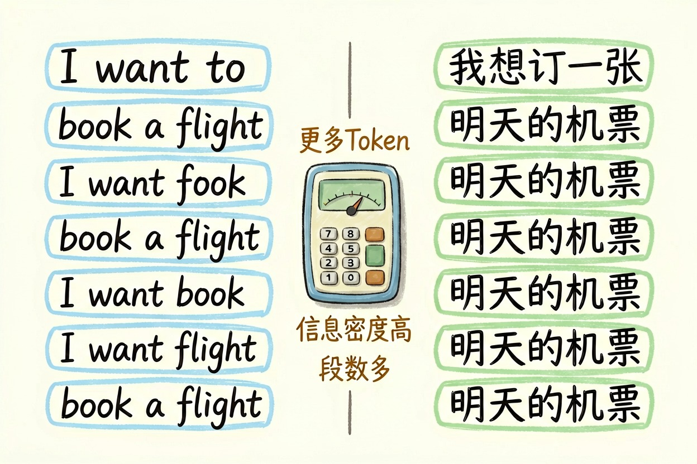
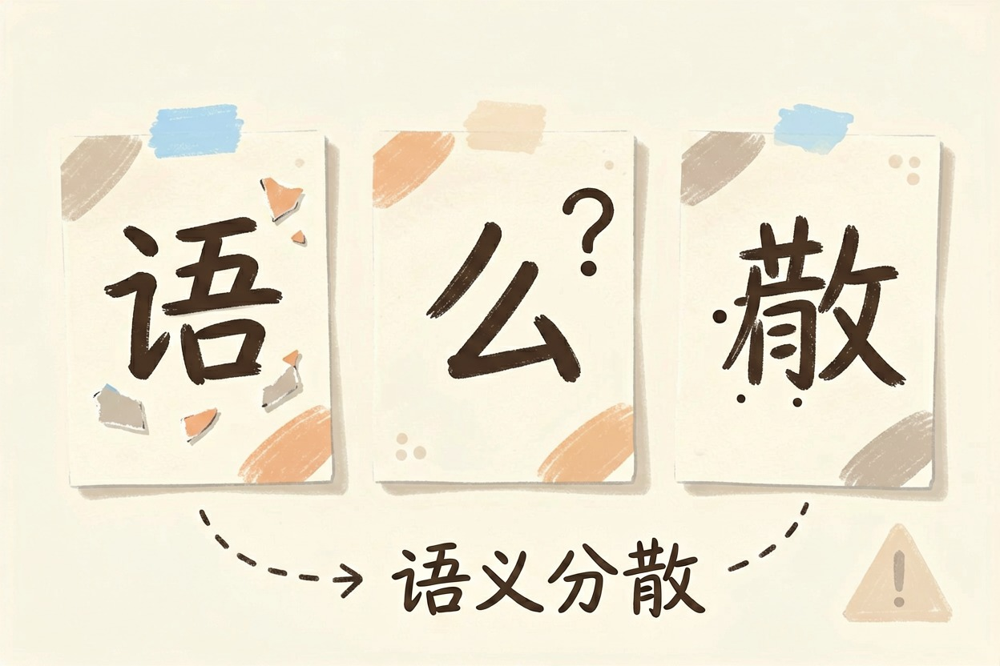
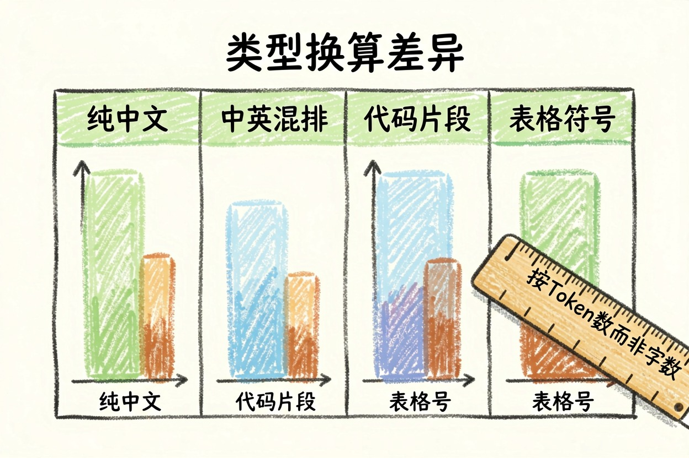

AI 是怎么读懂中文的？分词和词表讲清楚 — Learntide
句子进模型前会被剁成小块再编号，中文剁得比英文碎。这一步没走好，后面理解就跟着歪。
AI 怎么理解中文：先切块，再编号
AI 怎么理解中文，第一步和理解英文没什么两样：把句子切成一段段小片段，每段查表换成一个编号，再把这串编号交给模型算。
模型里没有汉字，也没有字母，只有数字。ai处理中文的方式，本质上就是这套切分加编号的流水线。
负责切分的组件叫分词器。它不按语法断句，也不管词性，只认自己那张词表里有哪些片段，然后尽量用少的片段把句子拼出来。
词表是怎么定下来的

中文tokenizer是什么，看它的词表怎么造出来最清楚。
做法是拿海量语料统计：哪些字符组合频繁地连在一起出现，就把它们合并成一个片段收进表里。反复合并若干轮，得到几万到十几万条。
同一句话的切分对比（示意）
英文：I want to book a flight tomorrow
→ I / want / to / book / a / flight / tomorrow 7 段
中文：我想订一张明天的机票
→ 我 / 想 / 订 / 一张 / 明天 / 的 / 机票 7 段
但汉字只有 10 个，平均一段还不到 1.5 个字大模型分词的原理就在这里：高频组合合并成一段，低频内容退回到更小的单位。词表是训练时定死的，用的时候改不了。
不同厂商的词表差别不小。同一句中文，换个模型切出来的段数可能差两成。所以跨平台比较消耗时，别拿一家的计数结果去套另一家。
中文为什么更费额度

英文里一个常见单词往往就是一段。中文常常一两个字就占一段，同样信息量，切出来的段数更多。
所以按段数计费的服务，中文内容通常吃亏。同一篇稿子中英对照，中文那一侧的消耗一般更高。
反过来，中文信息密度高，同样意思用的字更少。两边一抵，实际差距没看上去那么夸张。
这也影响一次能处理的长度。上限是按段数算的，不是按字数算的，所以「能读多少万字」这种说法只是个粗略换算。
粗估的话，中文可以按一个字接近一段来算，留点余量。真要精确，用官方计数工具跑一遍最稳。
生僻字、错别字和火星文

词表里没有的内容，会被拆成更碎的单位，甚至退到字节级别。一个生僻字可能占掉两三段。
这不只是费额度的问题。切得越碎，语义信息越分散，模型越容易理解偏。人名里的罕见字被读成别的字，就是这么来的。
错别字、繁简混排、拼音缩写、颜文字，都会造成同样的效果。夹杂大量特殊符号的文本，效果下滑最明显。
对应的做法很朴素：正文用规范汉字，专有名词写全称，第一次出现时补一句解释。
别只按字数估算长度
很多人拿字符数直接当额度用，结果不是超了就是留了太多冗余。中英混排、代码片段、表格符号，换算比例都不一样。
也别以为分词决定了理解。切分只负责把文本变成编号，真正表达含义的是后面那层向量。切分错了会带偏，切分对了也不保证答得准。
最后一条提醒：涉及关键人名、编号、金额的内容，别指望模型自动纠错。想弄明白 ai怎么理解中文，先记住它读的从来不是字，是片段。
本文信息核对于 2026-08-08。AI 产品的价格、免费额度与功能变动频繁，实际以各工具官网当前说明为准。